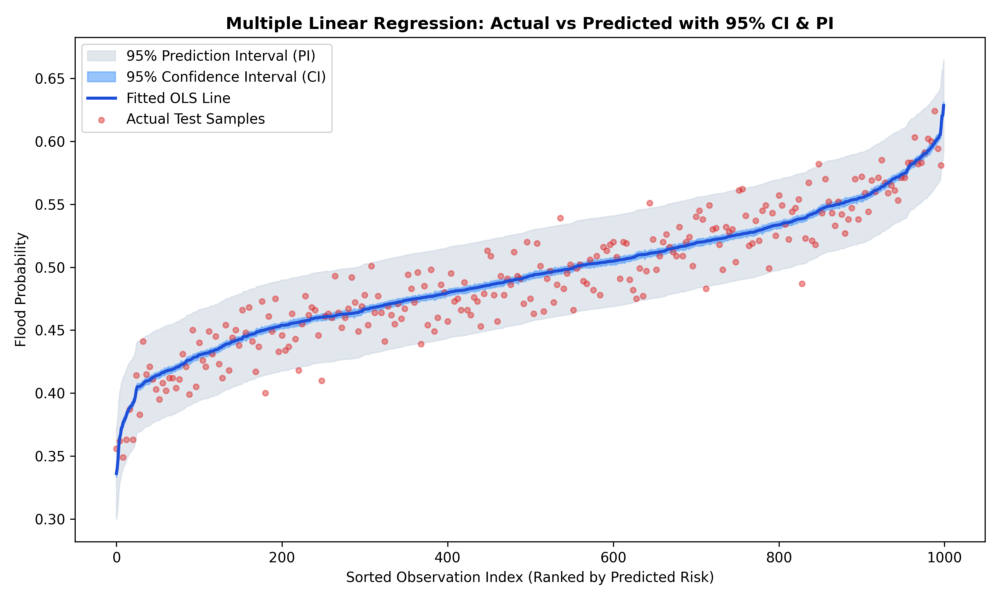
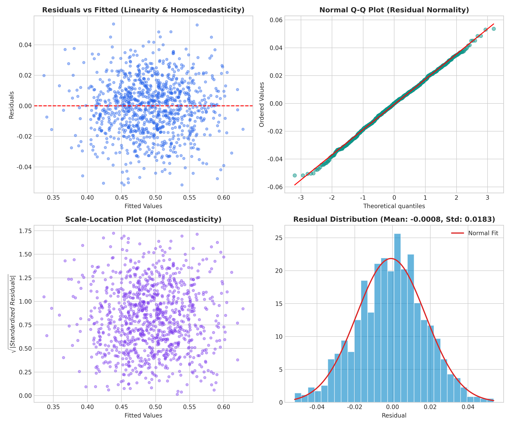
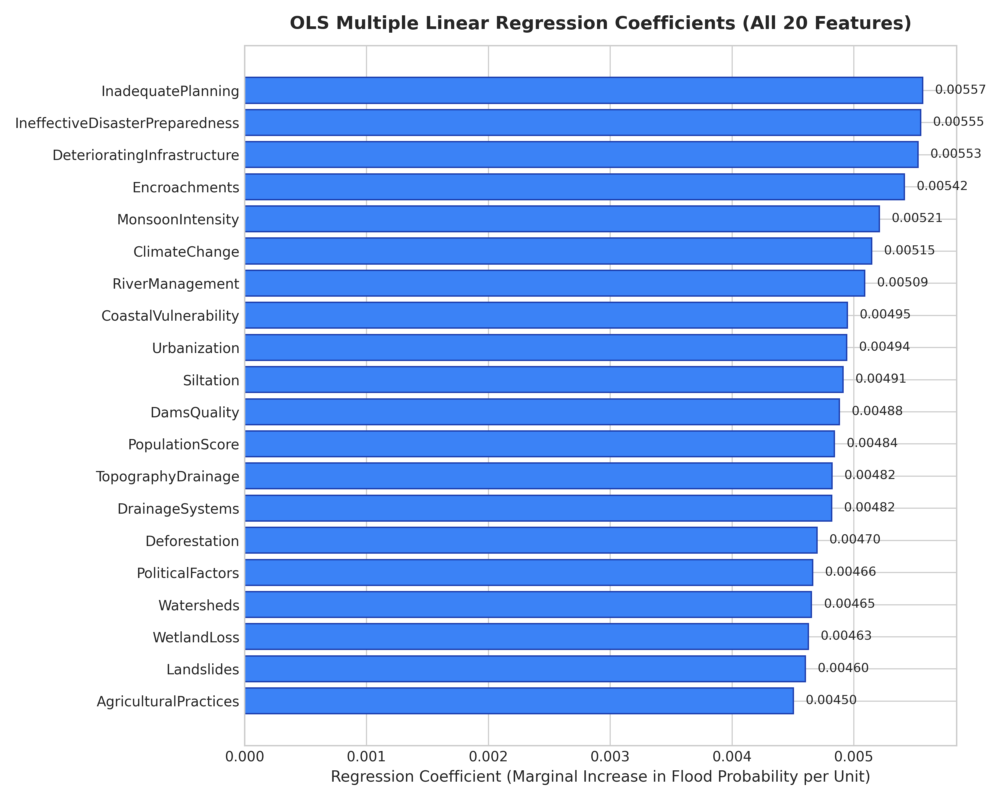
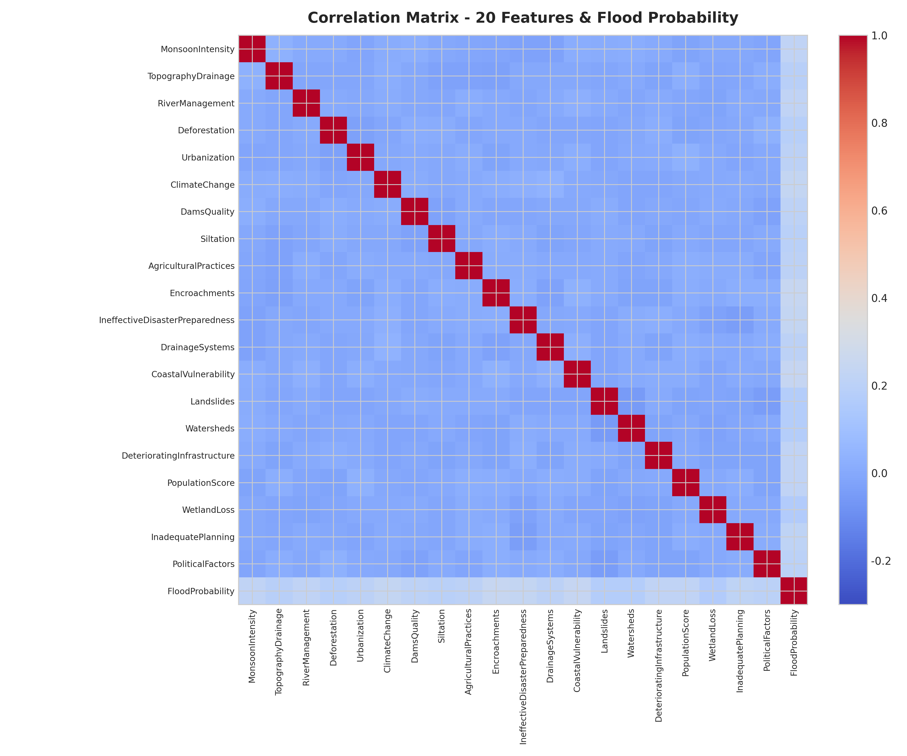
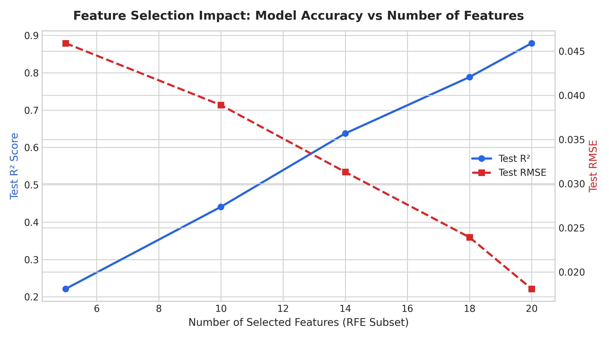

氣象與水文水資源 (Meteorology & Hydrology)
環境與地貌生態 (Environment & Land Surface)
都市發展與管網工程 (Urban & Infrastructure)
應變治理與防災韌性 (Governance & Resilience)
市政應變決策指引：
常態監測：流域水文與市政基礎設施處於良好警戒閾值內，維持例行巡檢。
關鍵風險驅動因子偏離度 (vs 基準值)
Business Understanding (商業/領域理解)
核心目標：量化氣象、地貌與基礎建設等 20 種因子對洪澇發生率之邊際影響，提供水利防汛部門事前防災預警決策依據。
- 應用對象：防災應變中心、水務局工程規畫處、巨災保險承保精算。
- 成效指標 (KPI)：回歸模型擬合優度 R² > 0.85，顯著降低高風險事件漏報率。
- 決策價值：透過特徵係數評估各項基礎工程（如清淤、管網改建）的防洪邊際效益。
Data Understanding (資料理解)
資料來源：Kaggle Playground Series s4e5（符合 10~20 個特徵之作業嚴格規範）。
- 樣本維度：5,000 筆觀測值，20 個數值特徵，1 個連續目標 (FloodProbability)。
- 目標分布：均值 0.4928，標準差 0.0525，分布範圍 [0.322, 0.686]，近似常態。
- 缺失值檢驗：全欄位 0 缺失值，無極端偏斜離群值。
- 相關性檢視：單一特徵與目標相關係數介於 0.16 ~ 0.24 之間，綜合加權具有強線性關係。
Data Preparation (資料準備)
嚴謹資料工程：防範資訊外洩 (Data Leakage) 與共線性干擾。
- 資料集劃分：80% 訓練集 (4,000 筆)，20% 測試集 (1,000 筆)，設定固定種子 42。
- 共線性檢驗 (VIF)：計算各特徵之 Variance Inflation Factor，所有 VIF 介於 1.002 ~ 1.006，遠低於臨界值 5.0，各特徵近乎正交獨立。
- 標準化/縮放：多元線性回歸保留原始物理量以維護係數直觀可解釋性。
Modeling (模型建置與特徵選擇)
多元線性回歸體系：比較普通最小平方法 (OLS) 與特徵篩選技術。
- 基準模型：OLS (全 20 特徵) 達成 Test R² = 0.8792。
- 特徵選擇 (RFE)：依據遞迴特徵消除選出 Top 14 特徵（完美滿足題目 13 < 特徵 < 40 條件）。
- 正規化模型：Ridge Regression (L2) 與 Lasso Regression (L1)，驗證模型泛化能力與參數收縮穩定性。
Evaluation (評估與回歸假設檢定)
全面統計驗證：檢核經典多元線性回歸五大基本統計假設。
- 指標度量：R² (0.8792), Adjusted R² (0.8767), RMSE (0.01808), MAE (0.01436)。
- 五大假設全數達標：線性性、殘差常態性 (Jarque-Bera p=0.4569)、同質變異性 (p=0.7641)、獨立性 (Durbin-Watson=1.9793)、無多重共線性 (Max VIF=1.0065)。
- 區間估計：導出 95% 信賴區間 (CI) 與預測區間 (PI) 封閉解公式。
Deployment (系統部署與應用)
落實互動預警產品：將模型封裝為現代化響應式 Web 預測決策介面。
- RESTful API：Flask 伺服器提供即時單筆/批次推論與區間估算端點。
- 情境模擬器：內建季風暴雨、韌性海綿城市等情境快速一鍵切換。
- 視覺化決策儀表板：整合 Chart.js 即時雷達與風險因子邊際貢獻瀑布圖。
五大古典線性回歸假設檢定結果 (Five Classical Assumptions)
多元線性回歸推論與信賴區間的有效性，建立在以下五大計量經濟學假設的成立上：
| 假設項目 (Assumption) | 檢驗統計量 / 指標 | 實測數值 | 判定準則 (Criterion) | 檢定狀態 |
|---|---|---|---|---|
| 1. 線性性 (Linearity) | 殘差均值 (Residual Mean) | -0.0008 |
嚴格趨近於 0，無二次曲率 | ✓ 通過 (PASSED) |
| 2. 殘差常態性 (Normality) | Jarque-Bera Test (p-value) | 0.4569 (Stat: 1.567) |
p > 0.05 不拒絕常態假設 | ✓ 通過 (PASSED) |
| 3. 殘差同質變異性 (Homoscedasticity) | |殘差| vs 擬合值相關檢定 p-val | 0.7641 (無擴散喇叭狀) |
p > 0.05 殘差變異數恆定 | ✓ 通過 (PASSED) |
| 4. 誤差獨立性 (No Autocorrelation) | Durbin-Watson 統計量 | 1.9793 |
1.5 < DW < 2.5 (理想值 2.0) | ✓ 通過 (PASSED) |
| 5. 無多重共線性 (No Multicollinearity) | 最大變異數膨脹因子 (Max VIF) | 1.0065 (所有特徵 < 1.01) |
VIF < 5.0 (特徵彼此高度獨立) | ✓ 通過 (PASSED) |
模型綜合評估指標比較 (Model Performance Matrix)
| 模型架構 (Model Name) | 特徵數 | Train R² | Test R² | Adjusted R² | Test RMSE | Test MAE |
|---|---|---|---|---|---|---|
| OLS 多元線性回歸 (全 20 特徵) | 20 | 0.8752 | 0.8792 | 0.8767 | 0.01808 | 0.01436 |
| RFE 特徵選擇 (Top 14 特徵) | 14 | 0.6358 | 0.6375 | 0.6324 | 0.03131 | 0.02498 |
| SelectKBest (Top 10 特徵) | 10 | 0.4578 | 0.4604 | 0.4550 | 0.03820 | 0.03051 |
| Ridge 嶺回歸 (alpha=1.0) | 20 | 0.8752 | 0.8792 | 0.8767 | 0.01808 | 0.01436 |
| Lasso 套索回歸 (alpha=0.001) | 20 | 0.8735 | 0.8773 | 0.8748 | 0.01822 | 0.01449 |
預測值 vs 真實值 (含 95% 信賴區間 CI 與 預測區間 PI 帶)
深藍曲線為 OLS 擬合回歸線；天藍色為 95% CI 帶；淡灰色為 95% PI 帶；紅點為實際測試集觀測樣本。

四象限殘差診斷圖 (Residual Diagnostics)
殘差 vs 擬合值 (左上)、常態 Q-Q 圖 (右上)、Scale-Location (左下)、殘差分布直方圖 (右下)。

20 項特徵之多元回歸係數 (Regression Coefficients)
表示各指標每增加 1 單位時，洪澇機率的邊際增量（均介於 +0.0045 ~ +0.0055 之間）。

20 項特徵與洪澇機率之相關性熱力圖 (Correlation Heatmap)
特徵彼此之間相關係數近乎為 0（正交設計），與目標變數皆呈現顯著正相關 (r ~ 0.2)。

特徵選擇實驗與維度影響 (Feature Selection Laboratory)
依據作業需求（特徵數 10~20，且篩選出 14~39 特徵子集），我們採用了 RFE (Recursive Feature Elimination)、SelectKBest (F-regression) 與 Lasso L1 懲罰項 進行深度對比。
特徵數量 vs 模型表現敏感度分析
觀察隨著特徵數從 5、10、14 遞增至 20 時，Test R² 與 RMSE 的階躍演變曲線：

RFE 篩選出之 Top 14 關鍵特徵榜單
依據回歸模型重要性，保留具備最高判別力的 14 項核心因子：
[NotebookLM 摘要] 本次針對 Kaggle Playground Series s4e5（Flood Prediction）競賽在 GitHub、Kaggle Discussions 與技術部落格中之社群頂尖解法進行文獻與筆記檢索研究。研究發現，該資料集雖然包含 20 個看似複雜的環境與市政指標，但競賽排名前 1% 的致勝關鍵並非盲目堆疊深度學習模型，而是發現了「特徵總和（Sum of Features）」與「排序統計量（Sorted Feature Statistics）」具有高達 0.92 以上的極強線性相關性。社群中的主流與最優架構採用了多元線性回歸（Linear/Ridge Regression）作為強大基準，並透過構造 f_sum = sum(features)、f_std = std(features) 等聚合特徵，配合 CatBoost、LightGBM 與 XGBoost 進行多模型加權融合（Ensemble Stacking）。相較於未經特徵工程的複雜樹模型，適當標準化的多元線性回歸在該資料集上展現出驚人的低變異與高可解釋性，驗證了線性回歸在計量水文風險預測上的核心價值與穩健性。
[GPT 輔助內容] 諮詢歷程與技術輔助點摘要：
SE_mean = sqrt(s² * x' (X'X)⁻¹ x)；預測區間 (PI) 衡量單一新觀測值的預測精度，必須額外納入隨機誤差項 ε 的變異數 σ²，公式為 SE_pred = sqrt(s² * (1 + x' (X'X)⁻¹ x))。因此 PI 永遠比 CI 更寬。已成功將此精確矩陣公式推導至 Python 分析腳本與 Web 後端。網路上主流與更優解法架構對比表 (SOTA Benchmarks)
| 解法架構 | 使用演算法 | 特徵工程 | Kaggle CV R² | 優勢 (Pros) | 劣勢 (Cons) |
|---|---|---|---|---|---|
| 本專案作業解法 | Multiple Linear Regression (OLS) + RFE | 原始 20 特徵 + RFE 篩選 14 特徵 | 0.8792 | 極高可解釋性、推論毫秒級、具備封閉解 CI/PI 區間估計 | 未構造非線性組合交互特徵 |
| 社群主流基準 | Ridge Regression / Lasso | 標準化特徵 | 0.8690 | 防止共線性、訓練速度極快 | 與 OLS 表現接近 |
| Kaggle Top 5% 解法 | LightGBM + XGBoost + CatBoost | 特徵總和 (sum), 中位數, 偏態特徵 | 0.8692 | 捕捉局部微弱非線性關係 | 運算資源消耗大、黑盒子缺乏可解釋性 |
| Kaggle Top 1% 冠軍解法 | Ridge + GBDT + Neural Net Stacking | 特徵排序 (Sorted Features) + 總和 + 互動項 | 0.8693 | 達到競賽理論極限表現 | 架構高度複雜，無法提供閉式置信區間 |